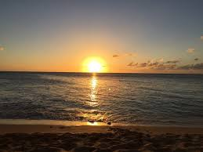
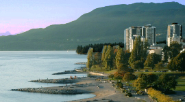

Sunset Beach
Located at the mouth of False Creek, on Beach Ave between Bute St and Thurlow St, Sunset Beach is a less populated beach close to the West End and downtown Vancouver. It is close to the Vancouver Aquatic Centre and has access to the False Creek Ferry pier.
Jericho Beach is currently open
Features at Sunset Beach
- On the Stanley Park Seawall system
- Concession
- Public washrooms
- Designated quiet beach
- Access to the False Creek Ferry pier
- Pay parking
- Lifeguards between Victoria Day and Labour Day (late May to early September)
Things to do at Sunset Beach
- Dog off-leash areas
- Find all of Vancouver’s dog parks and off-leash areas , whether in your neighbourhood or along the water.
- Vancouver Aquatic Centre
- The Vancouver Aquatic Centre is an indoor pool located in downtown Vancouver. Length: 50m. Diving board, diving tower, rope swing, slide, sauna, whirlpool, wheelchair accessible. 1050 Beach Ave, Vancouver, BC. 604-665-3424.
- Volleyball
- Vancouver has many options for playing volleyball. Find out about using indoor and outdoor volleyball courts, joining a volleyball league, or taking a volleyball course or workshop.